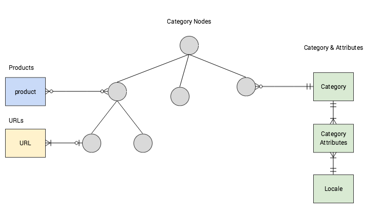

Category
Product Category
The mechanisms that make finding a product easier are the most important features in a commerce business. If it's difficult for a customer to find the product that he needs, then he won't buy it even if that product is available in the shop.
One of the features is organizing the products into divisions such as product categories. Organizing the products into categories provides easier navigation for the customer.
A product category is attached to products that are similar by one or more characteristics. A product can be assigned to multiple categories, depending on which characteristics are taken into consideration.
Example: a shirt is characterized by length of the sleeve, brand, color etc. It can be assigned to ‘Long sleeve’ category but also to ‘Blue’ category in the same time.
Overview
Categories are modeled in an hierarchical structure, a tree. For this, the category node entity was introduced - it links a category to its parent category.
A category can be assigned to multiple category nodes.
Category nodes have the following concerns:
- Structure of the category nodes
- Mapping of categories to products (a product can be assigned to multiple category nodes and a category node can contain several products)
- Mapping of URLs to category nodes
- Avoid circular dependencies on category nodes
- Reference a category (however a category can be referenced by several category nodes)

Categories have the following characteristics:
- Categories can be active/inactive (this flag acts as a soft delete functionality that can be undone anytime)
- Category attributes define name and meta keywords for every locale (a category is visible for a language only if it has the attributes defined for the locale in which the application is rendered)
Events Triggered
There are a few events that are triggered by this module. You to install the [Event](/core/modules/event) moduleto listen to events.
- Category.before.create - before category is created/persisted.
CategoryTransferpassed with prepared data for creating new category. - Category.before.update - before category is updated.
CategoryTransferpassed with prepared data for update. - Category.before.delete - before category is deleted. CategoryTransfer passed with id of category being deleted.
- Category.after.create - after category is created. CategoryTransfer passed with newly created category id stored.
- Category.after.update - after category update. CategoryTransfer passed.
- Category.after.delete - after category delete. CategoryTransfer passed.
Extension Points (Plugins)
It is possible to extend certain behavior though plugins. The Category module provides three plugin interfaces that can be used in project implementations:
\Spryker\Zed\Category\Dependency\Plugin\CategoryRelationReadPluginInterface
\Spryker\Zed\Category\Dependency\Plugin\CategoryRelationUpdatePluginInterface
\Spryker\Zed\Category\Dependency\Plugin\CategoryRelationDeletePluginInterfaceCustom project implementations of these plugin interfaces have to be provided by \Pyz\Zed\Category\CategoryDependencyProvider from the respective methods:
\Pyz\Zed\Category\CategoryDependencyProvider::getRelationReadPluginStack()
\Pyz\Zed\Category\CategoryDependencyProvider::getRelationUpdatePluginStack()
\Pyz\Zed\Category\CategoryDependencyProvider::getRelationDeletePluginStack()A description of the specification for each plugin interface can be found in its method annotations. There are reference implementations of each plugin interface in Spryker OS modules:
CategoryRelationReadPluginInterface\Spryker\Zed\ProductCategory\Communication\Plugin\ReadProductCategoryRelationPlugin
\Spryker\Zed\Cms\Communication\Plugin\RemoveCmsBlockCategoryRelationPlugin\Spryker\Zed\ProductCategory\Communication\Plugin\UpdateProductCategoryRelationPluginSpryker\Zed\ProductCategory\Communication\Plugin\RemoveProductCategoryRelationPlugin
\Spryker\Zed\Cms\Communication\Plugin\RemoveCmsBlockCategoryRelationPlugin
See also:
- Category Filters
- Feature Integration - Category Filters
- Under the Hood - Category Filters
- Search and Filters
- Category Filters Overview
- Graphic User Interface - Category Filters
- Creating and Managing Category Filters
Last review date: Dec. 1st, 2017